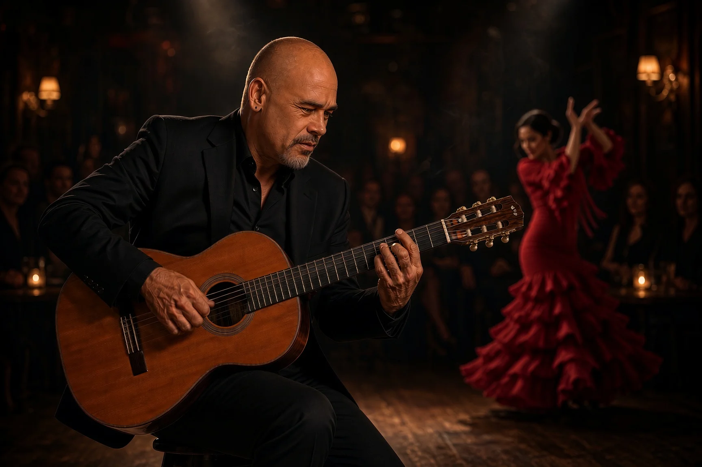

HCALIFORNIA
Hotel California
A cover of the Eagles' classic, highlighting intricate fingerstyle work and the iconic lead solos.
00:00DEMO PREVIEW
Leo López is a Spanish guitarist who fuses the fiery passion of flamenco, the soulful rhythms of Puerto Rico, and the vibrant energy of Latin music into a captivating musical experience.
Request a Performance ↗Born in the Caribbean coastal city of Ponce, Puerto Rico, Leo Lopez grew up surrounded by the rhythms of Bomba y Plena, the traditional sounds of his community that shaped his musical identity.
At only three years old, Leo received his first guitar, beginning a lifelong journey dedicated to mastering the instrument. His formal training started at eight years old and led him to the prestigious Conservatory of Music of Puerto Rico, where he earned his Bachelor of Arts in Music.
During his conservatory years, Leo was selected to perform at the renowned Heineken Jazz Festival, recognizing his exceptional talent and artistry.
EXPLORE LEO'S PERFORMANCE OPTIONS ↗Drop the needle. Let the melody take its time.
A cover of the Eagles' classic, highlighting intricate fingerstyle work and the iconic lead solos.
An expressive take on the timeless jazz standard, featuring smooth chord melody and clean phrasing.
A complete rendition of the rock anthem, moving from delicate acoustic picking to the dynamic main solo.
Distinctive live music, tailored to the mood and character of your event.
An elegant and intimate performance featuring Leo’s signature fingerstyle guitar technique. Perfect for wedding ceremonies, cocktail receptions, fine-dining experiences, and corporate gatherings.

A dynamic duo blending Latin, Flamenco, and contemporary acoustic influences.
Live music with soul & sophistication. Inspired by the tradition of Spanish guitar and deeply connected to his Afro-Caribbean roots, Leo moves comfortably across musical styles, creating a distinctive sound for a wide range of audiences and occasions.
Flamenco · Latin Jazz · Salsa · Bossa Nova · Rumba · Bolero · Mambo · Merengue · Bomba y Plena · Cuban Son · Classical Guitar
From intimate romantic ceremonies to high-energy celebrations, Leo seamlessly adapts his sound to match the exact mood of your event.
With extensive performance history across Puerto Rico and Central Florida, he brings total professionalism and reliability to every stage.
His background combines formal classical training with rich cultural heritage, delivering exceptional musical quality for diverse audiences.
Leo elevates any atmosphere by blending timeless elegance with the fiery, authentic passion of Flamenco and Latin fusion.
Behind the music: the places, the gear, and the performance.
Tell us a little about your event and our team will be in touch to discuss the details.
bookings@leolopezlive.com